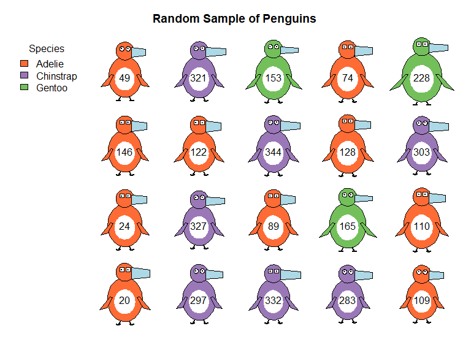
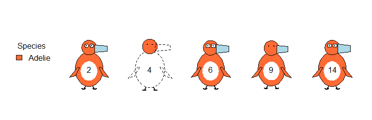
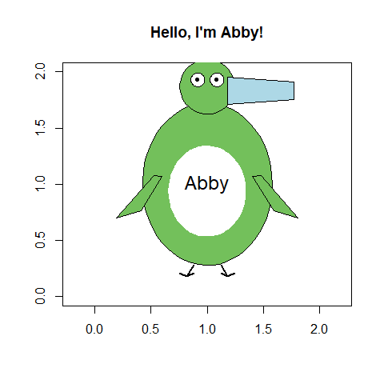
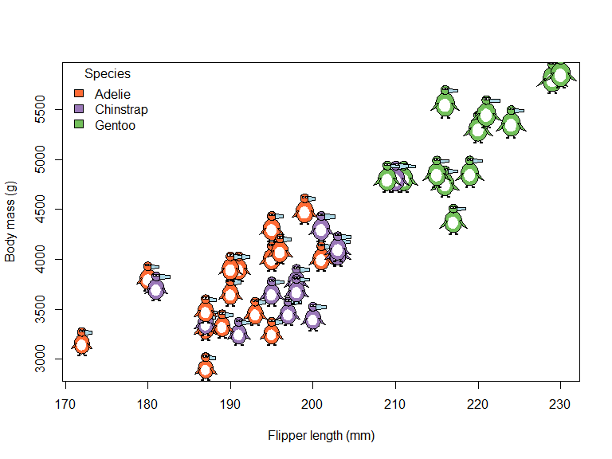
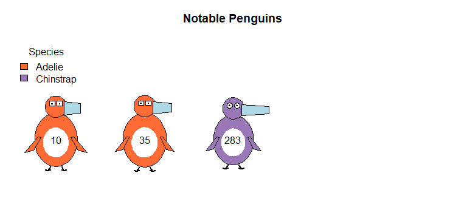
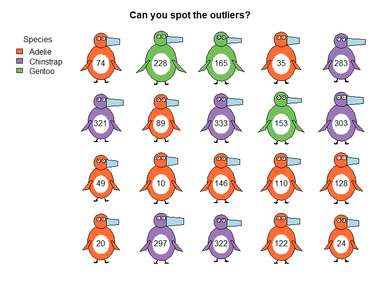
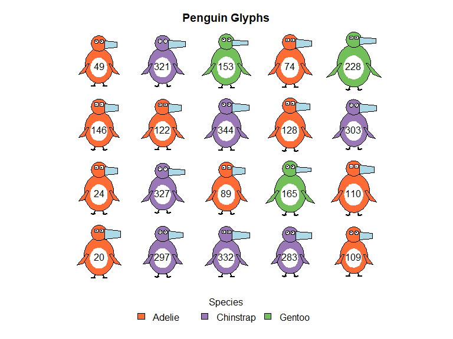

An experiment in visualizing multivariate penguin data as schematic penguin drawings. Physical measurements are mapped to visual features of penguin glyphs, making patterns in the data immediately apparent. Or do they? Designed to test some ideas in using glyphs to represent multivariate data, in a novel context.
Installation
You can install the development version from GitHub:
# install.packages("devtools")
devtools::install_github("friendly/penguinglyphs")Visual Mappings
The package maps penguin measurements to visual features:
- Bill length → horizontal extent of the bill
- Bill depth → vertical thickness of the bill
- Flipper length → length of the flippers
- Body mass → area of the body
-
Species → body color
- Adelie: Orange (#FF6B35)
- Chinstrap: Purple (#9A78B8)
- Gentoo: Green (#73C05B)
- Sex → eye shape (angular for males, round for females)
Each measurement is scaled relative to its range in the full penguins dataset, so a given penguin looks the same in whatever subset of the data it is shown.
Usage
Basic Example
penguin_glyphs() draws the penguins in a data frame as a grid of glyphs, labeled by their row names.
library(penguinglyphs)
# Load penguin data
data(penguins, package = "datasets")
# Visualize a random sample
set.seed(42)
sampled_rows <- sample(1:nrow(penguins), size = 20)
penguin_glyphs(penguins[sampled_rows, ], main = "Random Sample of Penguins")
A penguin with missing measurements has those parts of the glyph drawn as dashed outlines. If its sex is unknown, the eyes are drawn as pupils only. Here, penguin 4 has no measurements at all, and the sex of penguin 9 was not recorded.
penguin_glyphs(penguins[c(2, 4, 6, 9, 14), ], main = "")
Drawing Individual Penguins
draw_penguin() draws a single glyph in an existing plot. Its size is the height of the glyph in inches, and cex.lab controls the size of the id label.
# Create plot area
plot(1, xlim=c(0,2), ylim=c(0,2), type="n", asp=1,
xlab="", ylab="", main="Hello, I'm Abby!")
# Draw a penguin with custom characteristics
draw_penguin(1, 1,
bill_len_scale = 1.2,
body_scale = 1.4,
species = "Gentoo",
sex = "female",
id = "Abby",
size = 2.5,
cex.lab = 1.5)
Glyphs in Other Plots
Because the glyphs are sized in inches, they keep their shape in any plot, like a plotting symbol. penguin_points() adds a glyph for each row of a data frame to an existing plot, in the manner of points(), and penguin_legend() adds a legend for the species.
peng <- na.omit(penguins)
set.seed(42)
peng <- peng[sample(nrow(peng), 40), ]
plot(body_mass ~ flipper_len, data = peng, type = "n",
xlab = "Flipper length (mm)", ylab = "Body mass (g)")
penguin_points(peng$flipper_len, peng$body_mass, peng)
penguin_legend("topleft", peng$species)
Advanced Examples
# Examine specific outliers, among the penguins with complete data.
# Renumbering the rows gives the same case numbers as in heplots::peng
peng <- na.omit(penguins)
rownames(peng) <- NULL
outliers <- c(10, 35, 283)
penguin_glyphs(peng[outliers,], main = "Notable Penguins")
# Create a lineup for visual inference
set.seed(42)
cast <- c(sample(1:nrow(peng), size = 17), outliers)
lineup <- sample(cast, size = length(cast))
penguin_glyphs(peng[lineup,], main = "Can you spot the outliers?")
# Customize legend placement
penguin_glyphs(penguins[sampled_rows,],
legend = list(loc = "bottom", horiz = FALSE))
Key Functions
-
penguin_glyphs()- Creates a grid display of multiple penguins from a data frame -
penguin_points()- Adds penguin glyphs to an existing plot, at given coordinates -
draw_penguin()- Draws a single penguin at specified coordinates -
penguin_legend(),penguin_colors()- Species legend, and the default species colors -
normalize_var()- Helper function that scales variables to appropriate visual ranges
The package also contains the dataset crime, rates of serious crimes in the US states, used to illustrate Chernoff faces in the “How to Draw a Penguin” vignette.
Why Glyphs?
Glyph-based visualizations allow you to see patterns across multiple dimensions simultaneously. Larger penguins with longer flippers appear visibly different from smaller ones, and species differences are immediately apparent through color. This makes it easy to spot outliers, clusters, and relationships that might be hidden in traditional plots.
Related
This package is designed to work with what was originally the Palmer Penguins dataset, but now (R 4.5.0) in datasets::penguins, and in heplots::peng (which omits the NAs). This dataset is a popular alternative to the datasets::iris dataset for data exploration and visualization examples.